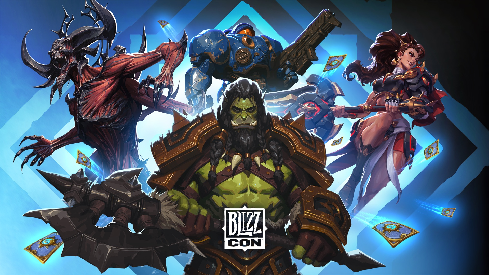
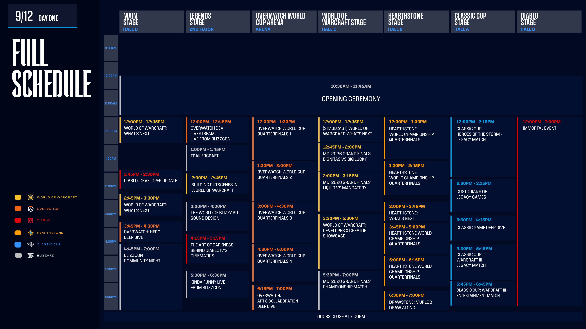
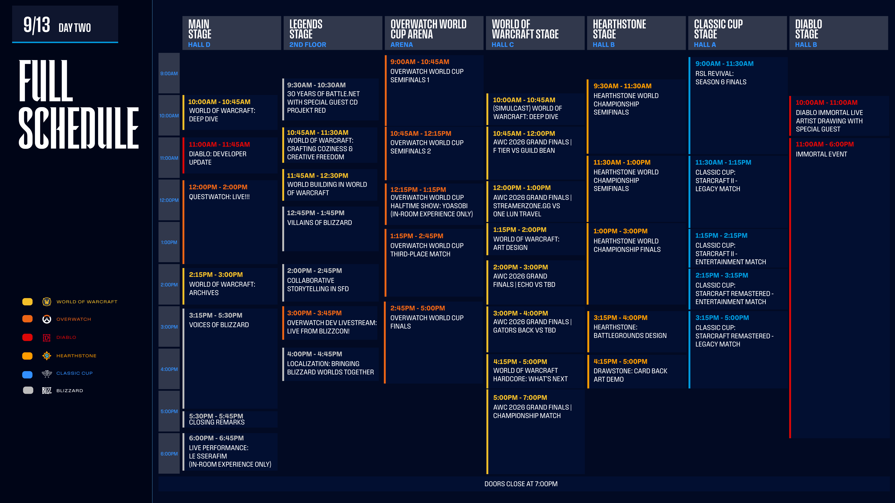
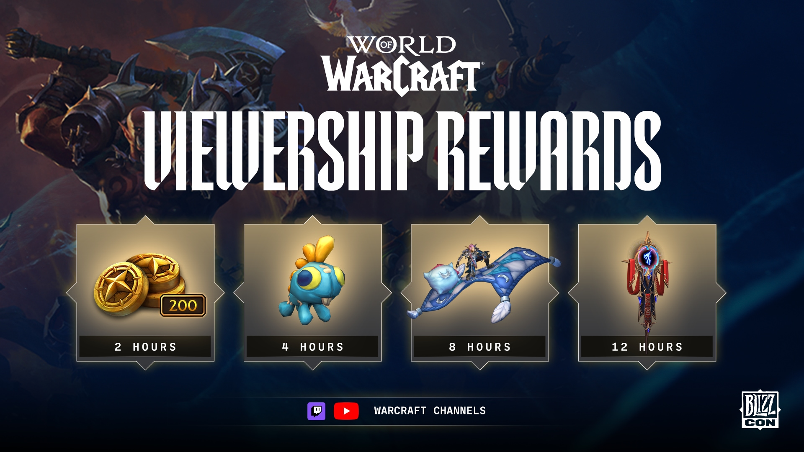
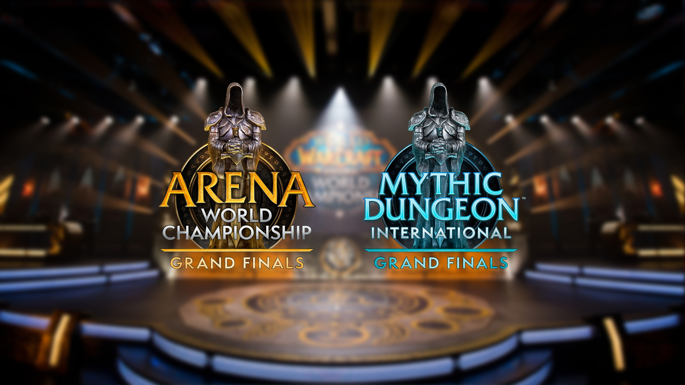
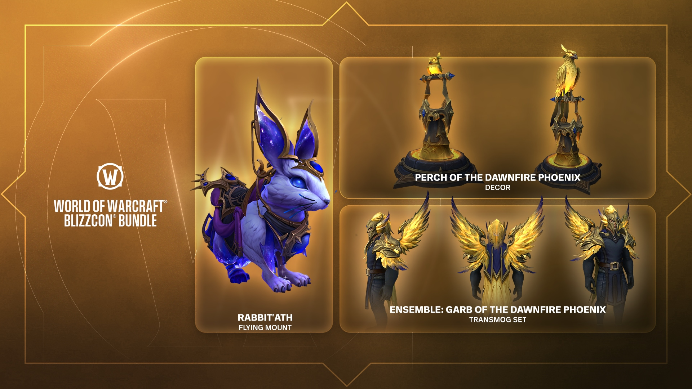
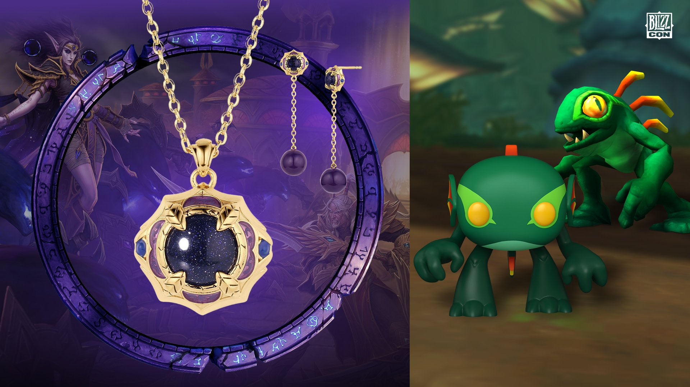

BlizzCon 2026 is next weekend: the full schedule, where to watch, and the rewards you can earn
BlizzCon returns to the Anaheim Convention Center on September 12 and 13, and this time there is a lot in it for World of Warcraft players who are watching from the couch. Two What's Next panels, a Deep Dive, a Hardcore panel, both esports Grand Finals, and in-game rewards just for having the stream on. Here is everything worth knowing before the doors open, with the times converted to Central European Summer Time so you know which alarms to set.

Watch from home
Select programming is streamed for free on the official Warcraft channels: https://www.twitch.tv/warcraft and https://www.youtube.com/warcraft. That covers the Opening Ceremony, the major panels and the esports. Worth knowing before you plan your evening: musical performances and some other segments are not streamed at all and are exclusive to people in the hall, so the Le Sserafim set closing out Day Two is an in-person thing. Blizzard's full Viewership Guide lists which channel carries what: https://blizzcon.com/viewership-guide/
Day One: September 12

The day opens at 10:30 a.m. PDT (19:30 CEST) with the Opening Ceremony. For WoW players the run that follows is the important part: World of Warcraft: What's Next at 12:00 p.m. PDT (21:00 CEST), What's Next II at 2:45 p.m. PDT (23:45 CEST), and the Developers x Creators Showcase at 3:30 p.m. PDT (00:30 CEST). Building Cutscenes in World of Warcraft runs at 2:00 p.m. PDT (23:00 CEST). Around those sit the MDI 2026 Grand Finals matches, Classic Cup Warcraft III games and BlizzCon Community Night at 4:45 p.m. PDT (01:45 CEST).
Day Two: September 13

Day Two starts half an hour earlier, at 10:00 a.m. PDT (19:00 CEST), with the World of Warcraft: Deep Dive, and it is the heavier day for anyone who likes hearing developers explain their work: Crafting Coziness and Creative Freedom at 10:45 a.m. PDT (19:45 CEST), World Building at 11:45 a.m. PDT (20:45 CEST), Art Design at 1:15 p.m. PDT (22:15 CEST), Design Deep Dive at 2:45 p.m. PDT (23:45 CEST), and World of Warcraft Hardcore: What's Next at 4:15 p.m. PDT (01:15 CEST). Closing Remarks at 5:20 p.m. PDT, then the Le Sserafim performance and the trophy ceremony to finish.
Rewards for watching

Watch eligible Warcraft streams on Twitch or the official World of Warcraft YouTube channel and you earn in-game rewards as the hours add up, across four tiers at 2, 4, 8 and 12 hours. Rewards and eligibility vary per game, per stream and per platform, so check the rules before you leave a tab running in the background. Attending in person instead? Link your BlizzCon Pass to your Battle.net account no later than September 18, 2026, or you lose the rewards.
The AWC and MDI Grand Finals

Both WoW esports titles finish their season on stage. The MDI 2026 Grand Finals fill Day One, with Dignitas against Big Lucky at 12:45 p.m. PDT, Liquid against Mandatory at 2:00 p.m. PDT, and the championship match at 5:30 p.m. PDT (02:30 CEST). The AWC 2026 Grand Finals run through Day Two, opening with F Tier against Guild Bean at 11:00 a.m. PDT and Streamerzonegg against One Lun Travel at 12:00 p.m. PDT, with Echo and Gators Back entering later in the bracket and the championship match at 5:00 p.m. PDT (02:00 CEST). The two events share a 600,000 dollar prize pool.
The BlizzCon bundle

The World of Warcraft BlizzCon Bundle bundles three digital items: the Rabbit'ath void rabbit flying mount, the Garb of the Dawnfire Phoenix transmog ensemble, and the Perch of the Dawnfire Phoenix for your house, which shows a phoenix going from hatchling to full form. It is on the Battle.net Shop through September 28, 2026, so there is no rush to decide during the show itself.
Merchandise

The Gear Store carries the BlizzCon 2026 line: apparel, collectibles, accessories and toys across World of Warcraft, Diablo, Overwatch and Hearthstone. The pieces Blizzard is leading with are a World of Warcraft x Rocklove jewellery collection and an Emrrrgl Murloc Funko Pop.
Going in person? Blizzard's Know Before You Go article on https://blizzcon.com covers the floor plan, badge pickup and accessibility options.
Everything above comes from Blizzard's own announcement: https://worldofwarcraft.blizzard.com/en-us/news/24294375
Watching the What's Next panels usually ends with a plan for the next character. When it does, the BiS Lists page has every class and spec covered for every Classic phase: https://boostyou.ai/content/bis.html